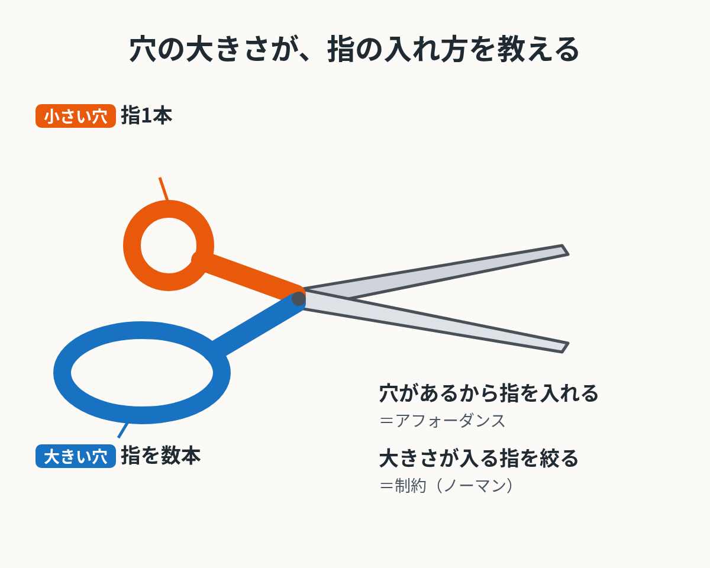
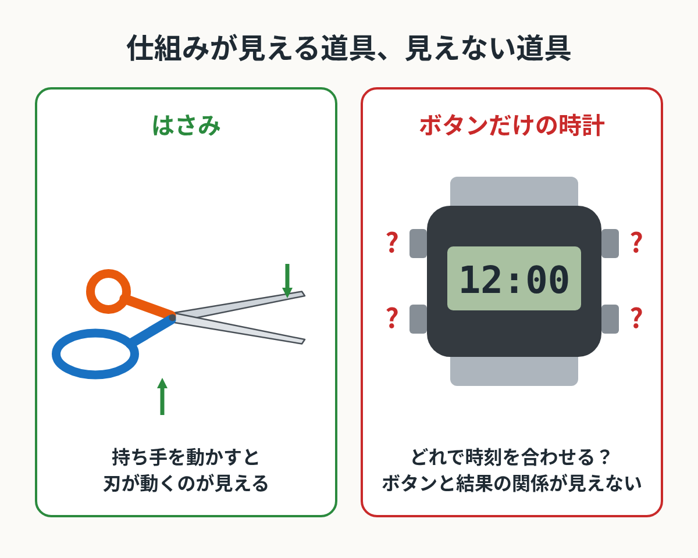

第5回 日用品と道具
はさみの大きい穴と小さい穴（指の入れ方を絞る手がかり）


何がどう行為を誘っているか
はさみの持ち手には、たいてい大きさの違う2つの穴があります。ノーマンは『誰のためのデザイン？』の原著で、はさみを初めて見る人でも使い方の見当がつく例として挙げました。穴は何かを入れるためのもので、入りそうなのは指だけです。そのうえで、小さい穴には指1本、大きい穴には指を数本、と穴の大きさが入れる指を絞ります。
ノーマンはこれを、穴はアフォーダンス（指を入れられる）、大きさは制約（入る指を限る）と説明しています。持ち手を動かすと刃が動くことも目で見てわかるので、使う人の頭の中に仕組みのイメージ（概念モデル）がすぐにできあがります。
惜しい例・悪い例との対比
ノーマンは同じ箇所で、はさみの反対の例として、表や横に2〜4個の押しボタンがあるデジタル時計を挙げています。それぞれのボタンが何のためか、時刻はどう合わせるのか、見ただけでは手がかりがありません。操作部と機能の関係が見えず、制約も対応づけもないからです。
ボタンが押せること自体は伝わっても、「どれを押すと何が起きるか」が隠れていると、人は説明書や試行錯誤に頼ることになります。
使いどころのひとこと
授業では「アフォーダンスと制約はセットで効く」例として、はさみの穴を見せるとすぐに伝わります。スライドやWebの入力欄でも、入れてほしいものの量や種類に合わせて枠の大きさや形を変えると、説明文を足さずに迷いを減らせます。
出典
- Norman, D. A. (1988). The Psychology of Everyday Things. Basic Books.（第1章、はさみとデジタル時計の例）
- Norman, D. A. (2013). The Design of Everyday Things (Revised and expanded edition). Basic Books.
- Gibson, J. J. (1979). The Ecological Approach to Visual Perception. Houghton Mifflin.